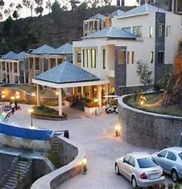
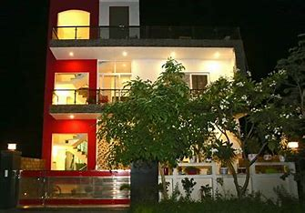
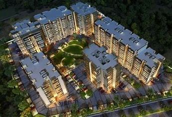

<!DOCTYPE HTML>
<html>
	<head>
		<title>Chandigarh Tourism</title>
		<meta http-equiv="content-type" content="text/html; charset=utf-8" />
		<meta name="description" content="Chandigarh is the only city in India that serves as the capital of two states, Punjab and Haryana, simultaneously. It is one of the union territories of India and derives its name from Chandir Mandir, a temple of Goddess Chandi, located in the nearby Panchkula district (Haryana)." />
		<meta name="keywords" content="Chandigarh,Chandigarh Tourism,Rose Garden Chandigarh,Rock Garden Chandigarh,Visit Chandigarh,Photos Chandigarh,Videos Chandigarh,Places Chandigarh" />
		<!--[if lte IE 8]><script src="js/html5shiv.js"></script><![endif]-->
		<script src="js/jquery.min.js"></script>
		<script src="js/skel.min.js"></script>
		<script src="js/skel-layers.min.js"></script>
		<script src="js/init.js"></script>
		<noscript>
			<link rel="stylesheet" href="css/skel.css" />
			<link rel="stylesheet" href="css/style.css" />
			<link rel="stylesheet" href="css/style-xlarge.css" />
		</noscript>
	</head>
	<body id="top">

		<!-- Header -->
			<header id="header" class="skel-layers-fixed">
				<h1><a href="index.html">Chandigarh Tourism</a></h1>
				<nav id="nav">
					<ul>
						<li><a href="index.html">Home</a></li>
						<li><a href="history.html">History</a></li>
						<li><a href="photogallery.html">Photo Gallery</a></li>
						<li><a href="gallery.html">Video Gallery</a></li>
						<li><a href="placestovisit.html">Place to Visit</a></li>
						<li><a href="howtoreach.html">How to Reach</a></li>
						<li><a href="accomo.html">Accommodations</a></li>
						<li><a href="map.html">Map</a></li>
						<li><a href="contact.html">Contact Us</a></li>
					</ul>
				</nav>
			</header>

             
<!-- Main -->
			<section id="main" class="wrapper style1">
				<header class="major">
					<h2>Accommodation </h2>
				</header>
				<div class="container">
					<section>
						<center><h2>Accommodation Options In Chandigarh</h2></center>
					<div class="row">
						<div class="6u">
							<section class="special">
							<a href="images/luxury.jpg" target="_blank" class="image fit"></a>
							<h3>Luxury Hotels</h3>
<h5>Chandigarh is home to a range of luxurious 
hotels that cater to discerning travellers. 
These properties offer plush 
accommodations, world-class amenities, and 
impeccable service, ensuring a truly 
memorable stay. Some notable options 
include the Oberoi Sukhvilas Resort & Spa 
and the Marriott Chandigarh.
</h5>
							</section>
						</div>
						<div class="6u">
							<section class="special">
								<a href="images/stays.jpg" target="_blank" class="image fit"></a>
								<h3>Budget Friendly stays</h3>
<h5>For travellers on a tighter budget, 
Chandigarh offers a variety of budgetfriendly accommodation options, including 
cosy guest houses, affordable hotels, and 
even eco-friendly campsites. These options 
provide comfortable and clean lodging, 
allowing visitors to experience the city's 
charm without breaking the bank.</h5>
							</section>
						</div>
					</div>
					<hr class="major" />
					<div class="row">
						<div class="6u">
							<section class="special">
								<a href="images/home.jpg" target="_blank" class="image fit"></a>
								<h3>Unique Homestays</h3>
<h5>Chandigarh's unique homestay options offer 
visitors a chance to immerse themselves in 
the local culture and experience true Punjabi 
hospitality. These intimate accommodations 
provide a personal touch, allowing guests to 
interact with their hosts, learn about the 
city's traditions, and enjoy authentic homecooked meals.
</h5>
							</section>
						</div>
						<div class="6u">
							<section class="special">
								<a href="images/apartment.jpg" target="_blank" class="image fit"></a>
								<h3>Serviced Apartments</h3>
<h5>For travellers seeking more flexibility and 
independence, Chandigarh's serviced 
apartment options provide a home-awayfrom-home experience. These fully equipped 
apartments offer the comforts of a private 
residence, along with access to various 
amenities, making them an ideal choice for 
extended stays or families</h5>
							</section>
						</div>
					

<!-- Footer -->
			<footer id="footer">
				<div class="container">
					<div class="row double">
						<div class="6u">
							<div class="row collapse-at-2">
								<div class="6u">
									<h3>Navigate</h3>
									<ul class="alt">
										<li><a href="index.html">Home</a></li>
						<li><a href="history.html">History</a></li>
						<li><a href="photogallery.html">Photo Gallery</a></li>
						<li><a href="gallery.html">Video Gallery</a></li>
						<li><a href="placestovisit.html">Place to Visit</a></li>
						<li><a href="howtoreach.html">How to Reach</a></li>
						<li><a href="accomo.html">Accommodations</a></li>
						<li><a href="map.html">Map</a></li>
						<li><a href="contact.html">Contact Us</a></li>
									</ul>
								</div>
							</div>
						</div>
						
						<div class="6u">
							<h2>Chandigarh Tourism</h2>
							<p>Chandigarh is the only city in India that serves as the capital of two states, Punjab and Haryana, simultaneously. It is one of the union territories of India and derives its name from Chandir Mandir, a temple of Goddess Chandi, located in the nearby Panchkula district (Haryana). </p>
							<ul class="icons">
								<li><a href="https://twitter.com/i/flow/signup" class="icon fa-twitter"><span class="label">Twitter</span></a></li>
								<li><a href="https://www.facebook.com/" class="icon fa-facebook"><span class="label">Facebook</span></a></li>
								<li><a href="https://www.instagram.com/" class="icon fa-instagram"><span class="label">Instagram</span></a></li>
								<li><a href="https://in.linkedin.com/" class="icon fa-linkedin"><span class="label">LinkedIn</span></a></li>
								<li><a href="https://in.pinterest.com/" class="icon fa-pinterest"><span class="label">Pinterest</span></a></li>
							</ul>
						</div>
					</div>
					<ul class="copyright">
						<li>&copy; All rights reserved.</li><br>
						<li>&copy; Designed by Shivam, Charanjit</li>

					</ul>
				</div>
			</footer>

	</body>
</html>